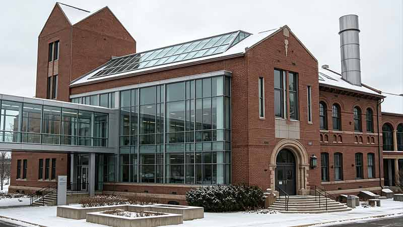
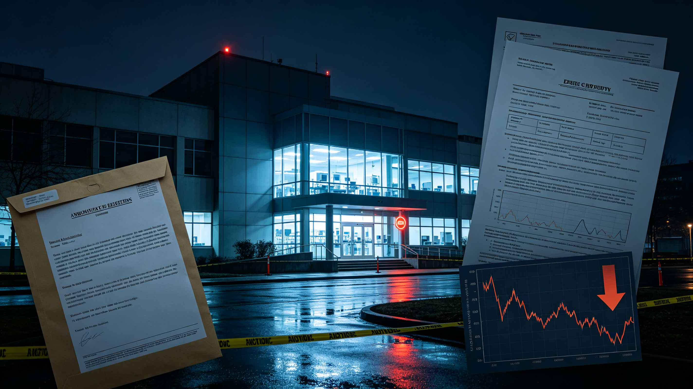

【怀悲悯之心行帮扶实事，以赤诚良知践行公益使命】
年度考核包含实地走访、服务样本抽查、弱势群体权益核查等多维度评估。评审组指出，福利院长期为无依靠成年人、弱势青少年提供食宿与基础医疗帮扶，公益配套体系完善，社会帮扶项目落地成效突出。 福利院院长CorinVale/科琳·维尔对外回应，该荣誉依托全体工作人员长期运营与社会各界捐助支持，机构将持续优化照料服务标准，保障院内收容人群基本权益。 最后还要感谢诺凡泰克集团Novatech Group长期以来对本院的巨额资金支持，用爱回馈的良心企业，行业典范慈善标杆。（主编：顾珩）
年度考核包含实地走访、服务样本抽查、弱势群体权益核查等多维度评估。评审组指出，福利院长期为无依靠成年人、弱势青少年提供食宿与基础医疗帮扶，公益配套体系完善，社会帮扶项目落地成效突出。 福利院院长CorinVale/科琳·维尔对外回应，该荣誉依托全体工作人员长期运营与社会各界捐助支持，机构将持续优化照料服务标准，保障院内收容人群基本权益。 最后还要感谢诺凡泰克集团Novatech Group长期以来对本院的巨额资金支持，用爱回馈的良心企业，行业典范慈善标杆。（主编：顾珩）
【重塑基因底层逻辑 探索生命科学边界】
众多早已过巅峰期的老牌影星、国际超模，近期公开亮相状态全面回春。皮肤紧致无松弛、体态年轻饱满、精气神堪比二十岁新人演员，彻底打破了艺人“花期短暂、岁月催老”的固有规律。 业内知情人士爆料，这场席卷整个欧美顶流圈层的冻龄浪潮，源于最新落地的顶尖生物抗衰黑科技。 区别于传统医美、护肤、运动保养的表层修饰，本次全新的生物注射技术直击人体衰老根源。通过人体基因修复再生技术，大幅延缓机体老化速度，直接实现平均长达二十年的年轻健康态延续。 这项颠覆性技术流出后，瞬间在好莱坞顶层社交圈刷屏。(记者：承峰 实习记者:温知佑)
众多早已过巅峰期的老牌影星、国际超模，近期公开亮相状态全面回春。皮肤紧致无松弛、体态年轻饱满、精气神堪比二十岁新人演员，彻底打破了艺人“花期短暂、岁月催老”的固有规律。 业内知情人士爆料，这场席卷整个欧美顶流圈层的冻龄浪潮，源于最新落地的顶尖生物抗衰黑科技。 区别于传统医美、护肤、运动保养的表层修饰，本次全新的生物注射技术直击人体衰老根源。通过人体基因修复再生技术，大幅延缓机体老化速度，直接实现平均长达二十年的年轻健康态延续。 这项颠覆性技术流出后，瞬间在好莱坞顶层社交圈刷屏。(记者：承峰 实习记者:温知佑)

【罔守科研伦理之底线，背弃济世研发之初心】
本报近日收到匿名人士实名举报材料，直指某生物企业存在多项严重违规行为。举报内容显示，该公司多款产品的生物实验均未取得伦理委员会审批许可，私自开展临床测试。 实验过程中企业刻意隐瞒药物副作用，篡改、筛选实验数据美化药效；同时存在利用内部实验信息暗中操纵公司股价，牟利套现的嫌疑。 目前本报已完整整理举报证据移交监管机构，相关部门回应会尽快针对举报线索启动全面初步核查。（记者 月亮）
本报近日收到匿名人士实名举报材料，直指某生物企业存在多项严重违规行为。举报内容显示，该公司多款产品的生物实验均未取得伦理委员会审批许可，私自开展临床测试。 实验过程中企业刻意隐瞒药物副作用，篡改、筛选实验数据美化药效；同时存在利用内部实验信息暗中操纵公司股价，牟利套现的嫌疑。 目前本报已完整整理举报证据移交监管机构，相关部门回应会尽快针对举报线索启动全面初步核查。（记者 月亮）